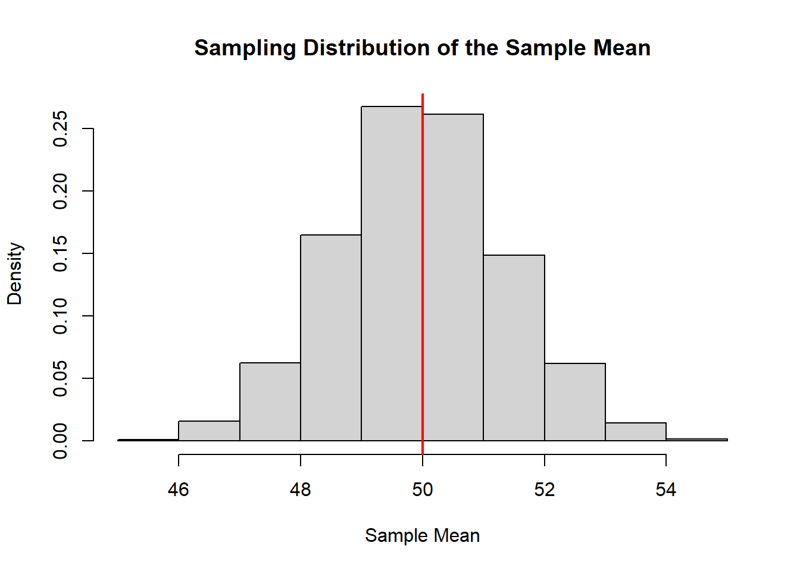
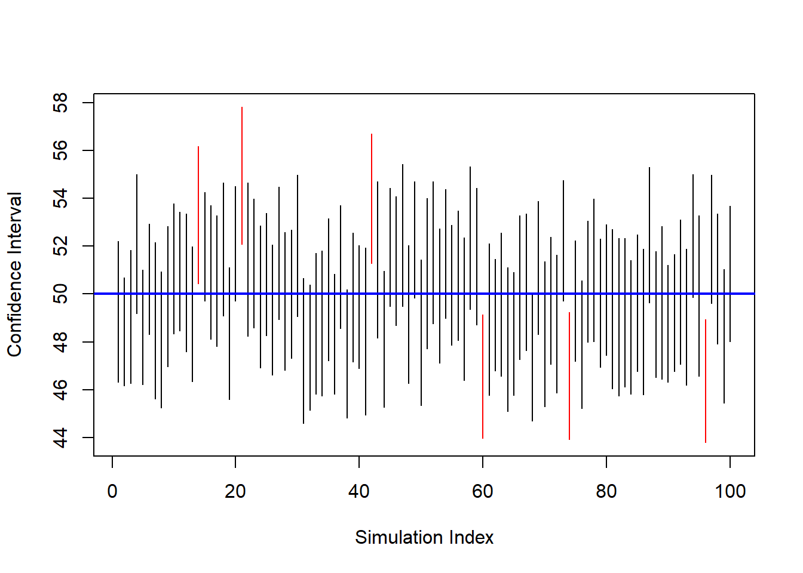
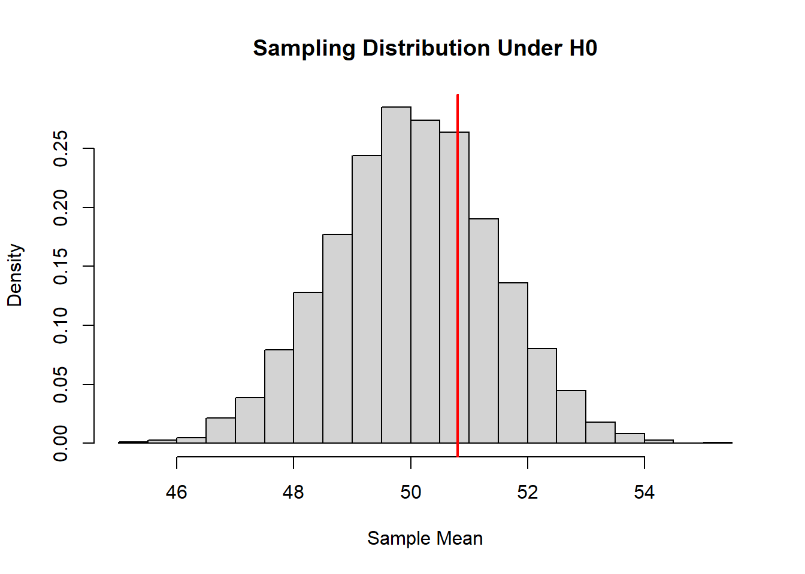
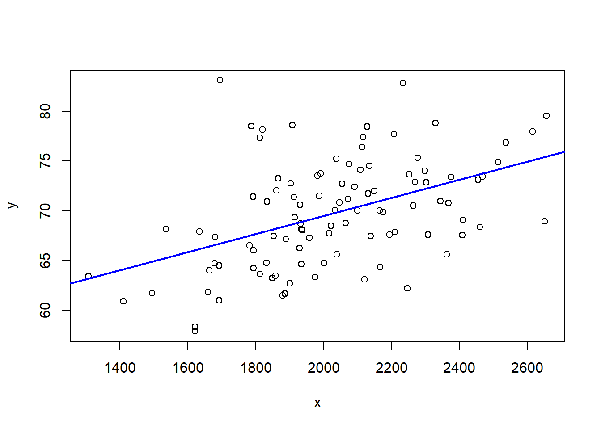
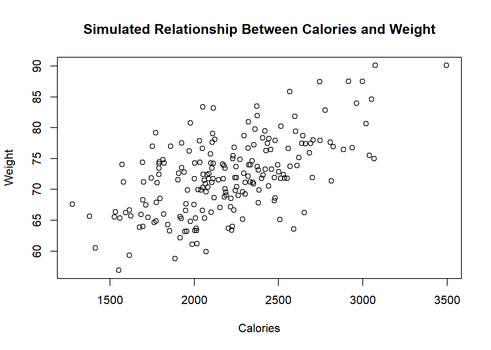

7 Intro to Statistical Inference
The objective of statistics is to make inferences about a population based on information contained in a sample. The most common type of inference is inference about population parameters. Under our framework, the population is a probability distribution. Observations are realizations of random variables generated from that distribution.
Sometimes we are interested in the entire distribution. More often, however, we focus on specific features of that distribution — numerical summaries that characterize important aspects of the population. These features are called parameters. In many applications, the primary parameter of interest is the population mean.
The transition from probability to statistics can be summarized as follows:
- Probability: The distribution is known; outcomes are random.
- Statistics: Outcomes are observed; the distribution (or its parameters) is unknown.
In this course, we will approach statistical inference using a computational and simulation-based framework. Rather than beginning with formulas, we will begin with data-generating mechanisms and repeated sampling experiments in R. This approach emphasizes intuition, variability, and the behavior of statistics across repeated samples.
7.1 From Probability to Statistics: A Simulation Perspective
In probability, we assume a distribution and compute properties such as expectations and variances.
In statistics, we reverse the direction:
- Assume data arise from an unknown distribution.
- Observe one sample.
- Use that sample to learn about the underlying distribution.
We can understand this transition by simulating a known population and pretending we do not know its parameters.
set.seed(123)
# Define a population distribution
mu_pop <- 50
sd_pop <- 10
# Generate a large population
population <- rnorm(100000, mean = mu_pop, sd = sd_pop)
mean(population)## [1] 50.00977## [1] 9.997334In practice, we do not have access to the full population. We only observe a sample.
## [1] 50.80728## [1] 9.218034The population mean is fixed. The sample mean varies from sample to sample. That variability is the foundation of statistical inference.
7.2 Objectives of Statistical Inference
Statistical inference seeks to answer questions about unknown population parameters using observed data.
Broadly speaking, the objectives are:
- To estimate unknown parameters.
- To quantify the uncertainty of those estimates.
- To evaluate competing claims about parameters.
- Studying relationships between variables.
- Make predictions about future observations.
We begin with estimation.
7.2.1 Estimation
Estimation refers to using sample data to approximate unknown population parameters.
Let the population mean be denoted by μ. We observe a sample and compute the sample mean x̄. The sample mean is a statistic — a random variable that depends on the observed data.
Estimation asks:
- How close is x̄ to μ?
- How variable is x̄ across repeated samples?
We explore these questions computationally.
set.seed(123)
n <- 50
num_rep <- 2000
sample_means <- replicate(num_rep, {
mean(sample(population, size = n))
})
hist(sample_means, probability = TRUE,
main = "Sampling Distribution of the Sample Mean",
xlab = "Sample Mean")
abline(v = mu_pop, col = "red", lwd = 2)
The histogram shows the sampling distribution of the sample mean. The red line indicates the true population mean.
This visualization captures a central idea:
Statistics are random variables. Their variability determines the reliability of our conclusions.
7.2.1.1 Point Estimation
A point estimate is a single numerical value used to estimate a population parameter.
For example:
- The sample mean estimates the population mean.
- The sample variance estimates the population variance.
- The sample proportion estimates the population proportion.
In our simulation:
## [1] 50.80728This number is our point estimate of μ.
A point estimate is simple and intuitive. However, it does not communicate uncertainty. Two different samples produce two different point estimates.
## [1] 51.25051## [1] 49.7197Both estimates target the same μ, but they differ because of sampling variability.
7.2.1.2 Interval Estimation
Interval estimation addresses uncertainty directly.
Instead of reporting a single value, we report a range of plausible values for the parameter.
Conceptually:
- A confidence interval is a random interval.
- Its randomness comes from the randomness of the sample.
We illustrate this computationally.
set.seed(123)
n <- 50
alpha <- 0.05
ci_bounds <- replicate(100, {
x <- sample(population, n)
x_bar <- mean(x)
s <- sd(x)
lower <- x_bar - 1.96 * s / sqrt(n)
upper <- x_bar + 1.96 * s / sqrt(n)
c(lower, upper)
})
ci_bounds <- t(ci_bounds)
plot(ci_bounds[,1], type="n",
ylim=range(ci_bounds),
xlab="Simulation Index",
ylab="Confidence Interval")
for(i in 1:nrow(ci_bounds)){
segments(i, ci_bounds[i,1], i, ci_bounds[i,2],
col = ifelse(ci_bounds[i,1] <= mu_pop &
ci_bounds[i,2] >= mu_pop,
"black", "red"))
}
abline(h = mu_pop, col="blue", lwd=2)
Each vertical segment is a confidence interval. Intervals that fail to contain μ are shown in red.
This simulation illustrates:
- Confidence intervals vary from sample to sample.
- A fixed proportion contain the true parameter.
- The parameter itself is fixed; the interval is random.
7.2.2 Hypothesis Testing
Hypothesis testing evaluates claims about population parameters.
The structure is:
- Null hypothesis (H0): A claim about the parameter.
- Alternative hypothesis (H1): A competing claim.
We measure how compatible the observed data are with the null hypothesis.
For example:
- H0: μ = 50
- H1: μ ≠ 50
Under H0, we can simulate the sampling distribution of the sample mean and assess how extreme our observed statistic is.
set.seed(123)
n <- 50
mu_null <- 50
# simulate under null
null_means <- replicate(5000, mean(rnorm(n, mean = mu_null, sd = sd_pop)))
hist(null_means, probability = TRUE,
main = "Sampling Distribution Under H0",
xlab = "Sample Mean")
abline(v = mean(sample_data), col = "red", lwd = 2)
The red line represents the observed sample mean. If it lies in the tails of the null distribution, we regard the data as inconsistent with H0.
Hypothesis testing is therefore a probabilistic assessment of evidence.
7.2.3 Relationship Between Variables
Statistical analysis is often concerned not only with single parameters but with relationships between variables.
For example:
- Does increased calorie intake lead to higher body weight?
- Does study time affect exam scores?
- Does blood pressure increase with age?
In such cases, the population model involves joint distributions.
Suppose:
\[ (Y, X) \]
has some joint probability distribution. We may be interested in:
- The population correlation
- The slope in a regression model
- Conditional expectations such as \(\mathbb{E}(Y \mid X)\)
We can simulate data with a linear relationship.
set.seed(123)
n <- 100
x <- rnorm(n, 2000, 300)
y <- 50 + 0.01*x + rnorm(n, 0, 5)
plot(x, y)
abline(lm(y ~ x), col = "blue", lwd = 2)
The fitted line estimates the population relationship. However, if we were to resample repeatedly, the slope estimate would vary. Thus regression coefficients are also random variables with their own sampling distributions.
Statistical inference in this setting focuses on:
- Estimating regression parameters
- Constructing confidence intervals
- Testing hypotheses about relationships
7.2.4 Prediction of Future Observations
Up to this point, we have discussed two primary objectives of statistics:
- Estimating unknown population parameters
- Testing hypotheses about those parameters
There is another important objective:
Making predictions about future observations.
This goal is slightly different from estimation. When we estimate a parameter, such as the population mean, we are trying to learn about a fixed (but unknown) characteristic of a probability distribution. When we make a prediction, we are trying to anticipate what value might be observed next.
This distinction is subtle but fundamental.
7.2.4.1 The Basic Idea
Suppose we observe a random sample:
\[ X_1, X_2, \dots, X_n \]
from a population distribution. We compute the sample mean:
\[ \bar{X}. \]
We have already seen that \(\bar{X}\) is a good estimator of the population mean \(\mu\).
Now imagine that one more observation will be collected:
\[ X_{n+1}. \]
A natural question arises:
What value should we expect for \(X_{n+1}\)?
If the data are independent and identically distributed, the best single-number summary of the center of the distribution is \(\mu\). Since we do not know \(\mu\), we use \(\bar{X}\) as our best guess.
Thus, the sample mean serves two roles:
- It estimates the population mean.
- It predicts the next observation.
7.2.4.2 A Very Simple Simulation
To see this concretely, suppose the true population mean is 50 (unknown to us). We collect a sample and use the sample mean to predict the next observation.
set.seed(123)
mu <- 50
sigma <- 10
n <- 15
# Generate a sample
x <- rnorm(n, mu, sigma)
# Compute sample mean
xbar <- mean(x)
# Generate a future observation
x_future <- rnorm(1, mu, sigma)
xbar## [1] 51.52384## [1] 67.86913The sample mean gives us a reasonable central value, but the future observation may differ substantially. This difference is not a mistake—it reflects natural randomness.
7.2.5 Repeating the Experiment
Let us repeat the process many times and examine how prediction errors behave.
set.seed(123)
B <- 1000
errors <- replicate(B, {
x <- rnorm(n, mu, sigma)
xbar <- mean(x)
x_future <- rnorm(1, mu, sigma)
x_future - xbar
})
mean(errors)## [1] -0.1871296## [1] 10.42275We observe two key ideas:
- On average, the prediction error is close to zero.
- Individual predictions can still be far from the realized value.
This illustrates an essential principle:
Even if we estimate the mean very well, individual future outcomes still vary.
7.2.5.1 A Conceptual Perspective
Estimation focuses on learning about a fixed parameter. Prediction focuses on forecasting a random future value.
As the sample size increases:
- Our estimate of the mean becomes more precise.
- But future observations remain inherently variable.
This means that prediction always involves uncertainty that cannot be completely eliminated.
7.3 Example of Statistical Inference
To illustrate these ideas in context, consider research examining the relationship between calorie consumption and body weight.
In nutritional epidemiology, researchers often study whether higher caloric intake is associated with increased body weight. Suppose a peer-reviewed study collects dietary data from a random sample of adults and measures their body weight.
Conceptually, the research question is:
- Is average body weight associated with average daily calorie intake?
- Is the mean weight of individuals consuming more than 2,500 calories different from those consuming fewer?
From a statistical perspective:
The population is the joint distribution of calorie intake and body weight.
Parameters may include:
- The mean body weight.
- The mean difference in weight between two groups.
- The slope in a regression model.
The researchers do not observe the entire population. They observe a sample.
Suppose we simulate such a scenario.
set.seed(123)
n <- 200
calories <- rnorm(n, mean = 2200, sd = 400)
weight <- 50 + 0.01 * calories + rnorm(n, sd = 5)
plot(calories, weight,
xlab="Calories",
ylab="Weight",
main="Simulated Relationship Between Calories and Weight")
In this simulated data:
- There is a positive association.
- The relationship is noisy.
- The sample represents only one realization of many possible samples.
From here, statistical inference addresses:
Estimation:
- What is the average effect of calories on weight?
- What is the estimated mean weight?
Interval estimation:
- What is a plausible range for the true slope?
- How precise is the estimated mean?
Hypothesis testing:
- Is the association statistically significant?
- Could the observed relationship arise by chance?
Importantly, any conclusion must account for sampling variability. A different sample might produce a slightly different slope, different means, and different p-values.
This example demonstrates the full transition:
- Probability describes how data could be generated.
- Statistics uses observed data to learn about the generating process.
We do not claim certainty. Instead, we quantify uncertainty using probability models.
7.4 Concluding Perspective
Statistical inference rests on three foundational principles:
- Data are realizations of random variables.
- Statistics computed from data are themselves random.
- Their sampling distributions determine the reliability of conclusions.
Probability provides the language of randomness. Statistics uses that language to extract information from data.
In the next lessons, we will formalize these ideas and develop the mathematical tools required for rigorous inference.